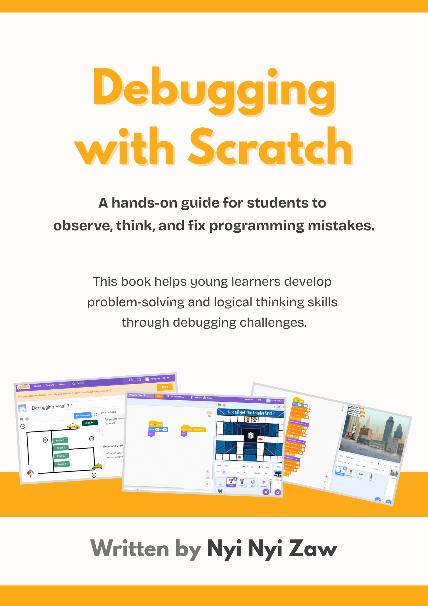

🏫
International School
Computing Teacher at ConceptX International School
Passionate Computing Teacher with industry experience in software development, dedicated to helping students build future-ready digital skills through engaging and practical learning.
A combination of classroom teaching, curriculum development, educational leadership, and software development experience.
Computing Teacher at ConceptX International School
Edexcel ICT & Computer Science
Scratch Game Jam, Web Coding Challenge, Canva Web Design, Programming Contest and STEM Racing (F1 in School)
Laravel, Vue.js, WordPress, REST API
My career began as a Junior Web Developer, where I worked on Laravel, Vue.js and WordPress projects. While I enjoyed software development, I discovered a greater passion: helping young learners understand technology through engaging and practical experiences.
Today, I teach Computing, Web Design, 3D Design, AI and Machine Learning and Edexcel IGCSE ICT & Computer Science while contributing to curriculum development, educational competitions and teacher training.
My journey from classroom teaching to curriculum development, student competitions and academic leadership.
Started teaching Computing across Lower Primary and Upper Primary while creating engaging, practical technology lessons.
Started teaching Computing across Secondary and IGCSE OLevel while creating engaging, practical technology lessons.
Led Scratch Game Jam, Web Coding and Canva Web Design Challenge, encouraging creativity, teamwork and problem solving.
Contributed to curriculum planning, lesson design and classroom resources for Primary students.
Led Python Programming Contest for Secondary level students to imporve logical thinking and problem solving skills.
Supporting recruitment, teaching quality, curriculum improvement and teacher development.
Conducted an online workshop on autism awareness tailored for young learners.
Delivered hands-on STEM education centered on aerodynamic principles, 3D vehicle design, and engineering experimentation for young learners.
Delivering online Computing curriculum for Primary to IGCSE level students.
Contributing to school improvement through leadership, curriculum development, teacher support and student-centered initiatives.
Before becoming a full-time educator, I worked as a Junior Web Developer, building web applications and supporting software projects. This technical foundation continues to enhance my teaching and curriculum design.
A balanced combination of software development, programming, educational technology and digital teaching tools.
Educational initiatives and school projects.
Digital platforms, programming languages and educational technologies I use to create engaging learning experiences.
Technological University (Hmawbi)
Graduated - 2023Complete certificate for Private Teacher Education Course - 2024
Educational resources, books, lesson materials and practical learning experiences designed to support Computing education.

A practical learning resource designed to help students understand debugging concepts through Scratch activities and problem-solving exercises.
Explore Resource →Thank you for visiting my portfolio. Whether you're looking for a Computing Teacher, IGCSE ICT & Computer Science Educator, curriculum developer, or someone passionate about educational technology, I'd be delighted to connect and explore opportunities together.